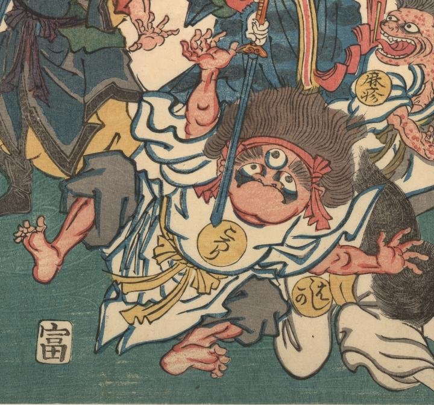

麻疹；ハシカ，三つ目；ミツメ，ころり；コロリ

武人に追い立てられるころりの化物。毛髪は逆立ち、赤い鉢巻をし、白衣をまとっている。三つ目である。武人の剣に恐れ諸手をあげている。
著作者：歌川芳虎／出典：親書誌：U426_nichibunken_0007：麻疹後の養生；ハシカノチノヨウジョウ／日付：2006／資源識別子：U426_nichibunken_0007_0001_0001
Copyright (c)2010- International Research Center for Japanese Studies, Kyoto, Japan. All rights reserved.